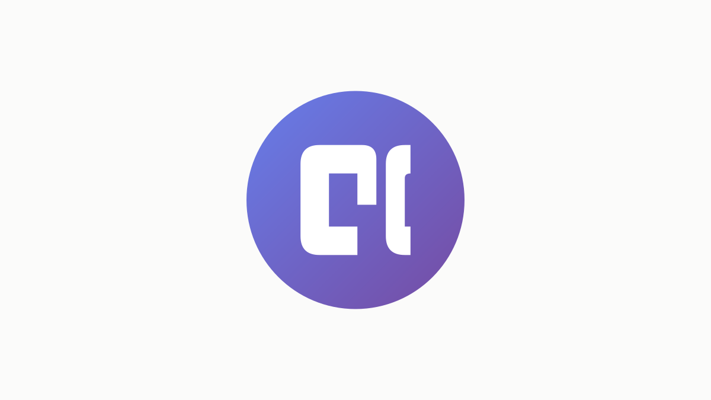

GyattChores

Overview
GyattChores began as a cloud-dependent React app and was rebuilt around a local-first architecture: every chore is written to the browser's localStorage instantly, so logging never blocks on the network and the app keeps working fully offline. When the shared Supabase backend is reachable, logs sync across devices in the background — local storage stays the source of truth and the cloud is a best-effort sync layer. The web app is a single self-contained HTML file (React 18 via CDN, Babel Standalone, hand-written Material-inspired dark CSS) installable as a PWA on iOS and Android, and a native SwiftUI app brings the same chore-logging to iPhone and Apple Watch. The repository is run under a lightweight, ITIL 4-aligned service-management system with change-control and incident documentation.
Stack
Features
- Local-first: every chore writes to localStorage instantly, so logging works fully offline and never blocks on the network
- Best-effort Supabase sync in the background when the shared backend is reachable, with local storage as the source of truth
- PIN-protected parent approval (with an 'approve all' shortcut) so points can't be self-awarded
- Daily and weekly point tallies per player, with a 👑 for the week's leader
- 17 customizable chores with tunable point values
- Installable PWA for iOS and Android, plus a native SwiftUI app for iPhone and Apple Watch
- Run under a lightweight, ITIL 4-aligned service-management system (change control, incident docs)
Key Technical Challenge
Re-architecting from a network-blocking, cloud-first design to a local-first store that writes instantly and reconciles with Supabase in the background — keeping the parent-approval workflow trustworthy across devices without ever blocking a kid's tap on connectivity.
Lessons Learned
Three things stuck. Logging should never block on the network, so localStorage became the source of truth and the cloud a best-effort sync layer. Perfect business rules on paper don't survive contact with real users — watching kids game the easy chores forced the real iteration. And enable row-level security from day one: it takes ten minutes and prevents disasters. Architecture should follow team size and timeline, not dogma — a single-file app was the right call for a solo, fast-moving project.